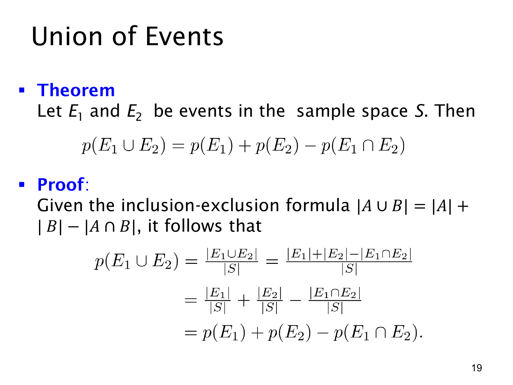

L1.9 · 第 19 页讲解原文
查看这一页课件

并事件中重复的那一部分
E1∪E2 表示“至少一个事件发生”，也包括两者同时发生。直接相加 p(E1)+p(E2) 时，交集被算了两次，需要减去一次：
p(E1∪E2)=p(E1)+p(E2)−p(E1∩E2).
课件的证明沿用集合容斥。在有限等可能样本空间中，除以 ∣S∣ 得
p(E1∪E2)=∣S∣∣E1∣+∣E2∣−∣E1∩E2∣=p(E1)+p(E2)−p(E1∩E2).
这个计数证明有等可能前提，概率公式本身也适用于不等可能的模型。
公平骰子的 F={4,5,6}、G={2,4,6} 有共同结果 4、6，所以
p(F∪G)=21+21−31=32.
只有互斥（disjoint / mutually exclusive）时，交集为空，才能把“或者”的概率直接写成两概率之和。互斥指两件事不能同时发生；独立指一件事是否发生不改变另一件事的概率。没有确认独立，也就不能把公式中的交集概率换成 p(E1)p(E2)。